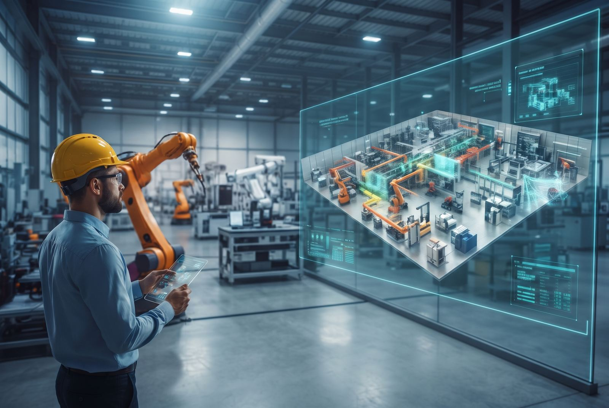

What is each machine doing right now?
Live status: running, stopped, slow or faulted.
OPMM
Live status for every machine, every stop with its reason, and one honest number for how well your lines really run.

OPMM turns machine signals into answers your team can act on.
Live status: running, stopped, slow or faulted.
Good, scrap and rework counts by machine, line and order.
Every stop is recorded with its duration and its reason.
OEE by machine, line and plant; by hour, shift and order.
Follow one stop on Line 1, from the first look at the plant to the reason on the record.
Machines report facts. People explain them. Nobody can turn a breakdown into a “slow run”.
A concept of one shift on a line: a stop happens, the operator explains it, and OEE responds. Three machines, simulated data.
Simulated data, not connected to a PLC
You are the operator. Why did Machine 2 stop?
Overall Equipment Effectiveness multiplies three questions. 100% means only good parts, at full speed, with no unplanned stops.
Was it running when it should?
Lost to unplanned stops: breakdowns, missing material, lost signal.
Did it run at ideal speed?
Lost to slow running and short micro-stops.
Were the parts good?
Lost to scrap and rework.
74%
An illustrative 8-hour shift: 90% availability × 85% performance × 97% quality. Of 480 minutes paid for, only 356 produced good parts at full speed. The other 124 minutes are the opportunity, and the MES shows where they went.
Six pieces, one flow of data. Select a piece to see what it does.
Brings new signals into the MES, translates each tag to its machine and hands the data to the database to interpret. Mapping a new tag is a configuration row, not new code.
Results roll up the way a plant really works. A line is paced by its slowest machine, not by a simple average, so the same loss is never counted twice.
When every stop has a reason, the biggest losses become obvious and get fixed first.
Live OEE replaces end-of-shift estimates and spreadsheets.
More good parts from the same machines, people and hours.
Start with one machine, then extend to lines and plants.
The 15-slide presentation for plant and operations leaders.
We set up the demo with your machines and your stop reasons.